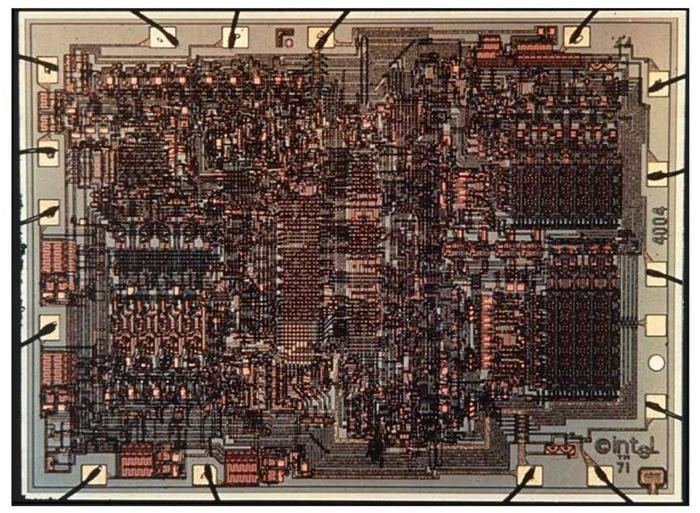

Главная страница
Список процессоров
Intel 4004
Первый коммерчески доступный микропроцессор

15 ноября 1971 года вышла микросхема 4004 — первый микропроцессор, который при стоимости 200 долларов реализовывал на одном кристалле функции процессора большой ЭВМ.
Первый в мире микропроцессор был анонсирован в ноябре 1971 года в журнале Electronic News. Микропроцессор 4004 выпускался в 16-контактном корпусе типа DIP, размеры
кристалла были 12 мм² (3×4 мм). Процессор мог выполнять 60 000 (в среднем; максимально — до 93 000) инструкций в секунду (для сравнения, один из первых полностью
электронных компьютеров — американский ЭНИАК — выполнял только 5000 (максимально) инструкций в секунду с разрядностью 20 бит, занимал 280 м², весил 27 тонн и
потреблял 174 кВт энергии). Фирма Intel предугадала решающее значение микропроцессоров в миниатюризации компьютеров и поэтому выкупила у фирмы Busicom авторские
права на микропроцессор 4004 и его усовершенствованные версии за 60 000 долларов. Однако в 1971 году процессор так и не стал хитом продаж. Стратегия фирмы Intel была
направлена на то, что сбыт 4004 расширяет рынок намного более популярных микросхем памяти 1101/1103. Популярностью стал пользоваться только микропроцессор 8080 — электронный «правнук» 4004.
Технические характеристики
- Дата анонса: 15 ноября 1971 года
- Количество транзисторов: 2300
- Площадь кристалла: 12 мм²
- Техпроцесс: 10 мкм (P-channel silicon pie MOS technology)
- Тактовая частота: 740 кГц опорная (или 92,6 кГц тактовая, время выполнения одной инструкции 8 тактов)
- Разрядность регистров: 4 бита
- Количество регистров: 16 (16 четырёхбитных могут быть использованы как 8 восьмибитных)
- Количество портов: 16 четырёхбитных ввода/вывода (в области программ) и 32 четырёхбитных вывода (в области данных)
- Внутренняя шина: 4 бита
- Внешняя шина: мультиплексированная для адреса, данных, управления — 4 бита (плюс 5 линий CM выбора банка памяти)
- Гарвардская архитектура
- Стек: внутренний 3-уровневый
- Память команд (ПЗУ/ROM, а также ОЗУ/RAM при использовании 4008/4009/4289): 4 килобайта (32768 бит)
- Память данных (чип 4002 ОЗУ/RAM): 640 байт (5120 бит) без дешифратора адреса, или 1280 байт (10240 бит) с дешифратором адреса.
- Организация адресного пространства: неоднородная, разделена для разных команд
- область программ: 1 банк, 12 бит адреса, 8 бит данных
- область регистров данных: 8 банков (3 бит), 8 бит адреса, 4 бита данных
- область регистров состояний: 8 банков (3 бит), 4 бита адреса, 4 бита данных
- область ввода-вывода (в банке программ): 1 банк, 4 бита адреса, 4 бита данных
- область вывода (в банках данных): 8 банков (3 бит), 4 бита адреса, 4 бита данных
- Количество инструкций: 46 (из которых 41 — 8-разрядные и 5 — 16-разрядные)
- Цикл инструкций: 10,8 микросекунды.
- Напряжение питания: −15 В (pMOS)
- Рабочая температура: от 0 до +70 °C
- Условия хранения и эксплуатации: от −40 до +85 °C
- Разъём: DIP16 (микросхема непосредственно впаивалась в печатную плату либо устанавливалась в специальный слот)
- Корпус: 16-контактный DIP (1 вид пластиковый или 3 вида керамического, например C4004 (белая керамика с серыми полосками), С4004 (белая керамика), D4004 (чёрно-серая керамика), P4004 (чёрный пластик))
- Тип поставки: отдельно и в комплектах MCS-4 (ROM, RAM, I/O, CPU)
Схема процессора Intel 4004
